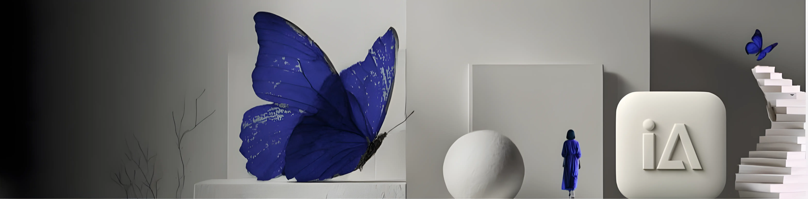

← Architecture Pédagogique & IA
6 Frameworks
6 Frameworks
propriétaires LSN
Du prompt engineering à la chaîne de production automatisée. Chaque framework est un système complet — testé, documenté, transmissible.
Cadres d'intervention
Des frameworks activables en mission, pour co-construire des projets solides.

Framework 01
Un de ces frameworks correspond à votre besoin ?
Discutons de son application dans votre contexte.